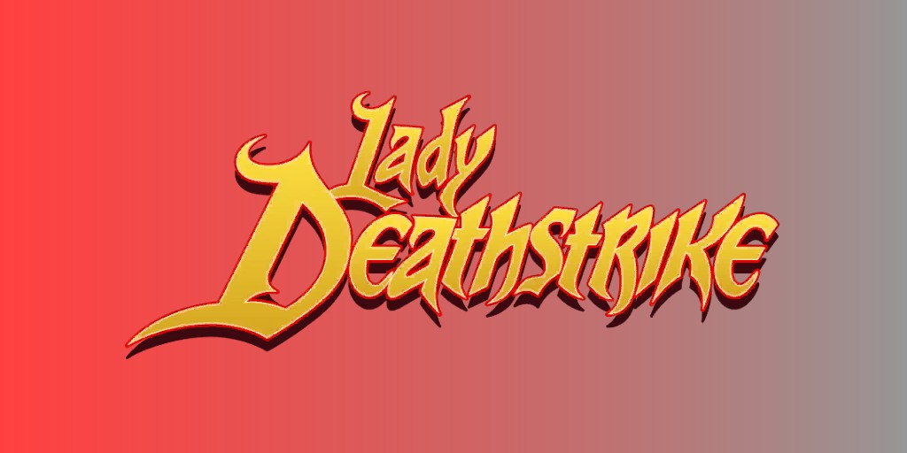
Lady Deathstrike (Yuriko Oyama) (Terre-616)
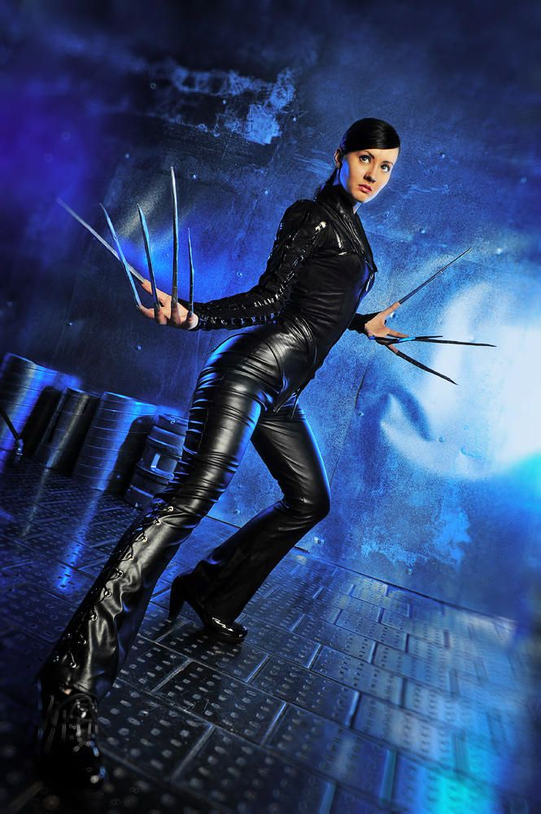
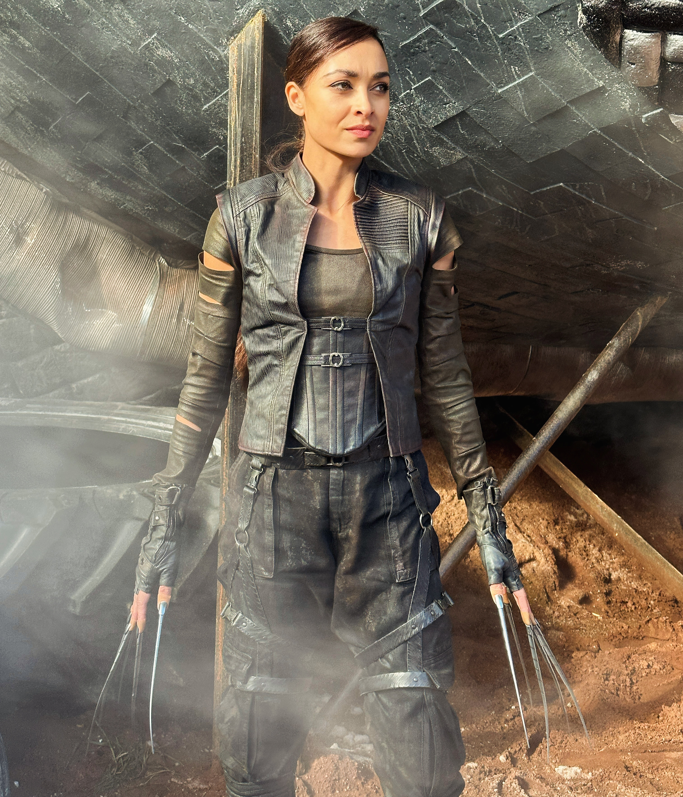
Origines :
Yuriko Oyama est la fille de Kenji Oyama, un ancien pilote kamikaze japonais de la Seconde Guerre mondiale, dont le visage a été terriblement défiguré lors d'une tentative d'attentat-suicide ratée contre un cuirassé américain.
Considérant cet échec comme une honte, Oyama consacra sa vie à expier son échec.
Il s'installa sur une île privée, se maria et eut une fille, Yuriko, ainsi que deux fils, avant de devenir le Seigneur Vent Noir.
De manière particulièrement cruelle, il défigura le visage de ses enfants de la même façon qu'il avait lui-même été mutilé.
Il confia ensuite leur éducation à Marcy Stryker, épouse du soldat américain William Stryker.
Le Seigneur Vent Noir bâtit un empire criminel sur son île, employant des assassins comme disciples qu'il forçait à adopter les traditions féodales, et fera assassiner ses fils lors d'une tentative d'assassinat du Premier ministre japonais.
En parallèle, Yuriko tomba amoureuse de l'un des assassins de son père, un guerrier nommé Kira.
Mais alors que Kira suivait aveuglément l'idéologie violente du Vent Noir, Yuriko en vint progressivement à mépriser son père.
Le Seigneur Vent Noir mit ensuite au point un procédé permettant de lier l'Adamantium, un métal pratiquement indestructible, au squelette humain.
Il espérait utiliser cette technique afin de créer une armée de super-soldats pour l'armée japonaise.
Cependant, ses notes furent mystérieusement volées, l'obligeant à recréer ce procédé pendant des années.
Il contacta finalement le Caïd, souhaitant recruter Bullseye qui avait été gravement handicapé lors d'un affrontement avec Daredevil, afin de tester son expérience en soignant sa colonne vertébrale avec l'adamantium.
A la poursuite de Bullseye, Daredevil se rendit au Japon rencontra Yuriko sur l'un des navires de son père.
Cherchant à se venger de son père, qui l'avait défigurée et tué ses frères, Yuriko guida Daredevil jusqu'à son île.
Le justicier aveugle y affronta à nouveau Bullseye qui s'échappa, tandis que Yuriko tua son père, qui s'apprêtait à assassiner Daredevil.
Tragiquement après le départ de Daredevil, Kira se suicida, désespéré par la mort de son Seigneur.
Le choc de ce décès bouleversa profondément Yuriko, qui résolut de perpétuer l'héritage de son père.
Elle tenta de retrouver Bullseye, qui avait déserté le service de son père sans le rembourser.
En suivant sa trace, elle tomba par hasard sur le mutant Wolverine, dont le squelette en adamantium avait été obtenu grâce au procédé volé au Seigneur Vent Noir des années auparavant.
Vêtue d'une armure de samouraï et se faisant désormais appeler Lady Deathstrike, Yuriko mena plusieurs guerriers de son père jusqu'au Canada, où ils affrontèrent Wolverine afin de récupérer son squelette en adamantium, fruit illégitime des expériences de son père.
Elle fut vaincue par Heather Hudson, amie de longue date de Wolverine, qui avait adopté l'identité de Vindicator en tant que chef de l'équipe de super-héros canadienne Alpha Flight.
N'ayant pas réussi à vaincre Wolverine, Lady Deathstrike décida de le surpasser et de devenir son égale.
Elle conclut un pacte avec Spiral, qui la transforma en cyborg dans son atelier, guérissant au passage les cicatrices de son visage.
Lady Deathstrike sacrifia le reste de son humanité pour regagner son honneur en devenant une arme vivante dotée d'un corps mécanique puissant et de griffes en adamantium aussi solides que celles de Wolverine.
Elle s'allia à trois autres cyborgs blessés par Wolverine, Cole, Macon et Reese, anciens membres du Club des Damnés.
Wolverine sera sauvagement agressé par Deathstrike et ses nouveaux acolytes, mais reçut l'aide de la jeune héroïne Katie Power.
Lors d'un combat singulier, Wolverine vainquit Deathstrike, la laissant en lambeaux.
Une fois de plus vaincue, elle implora Logan de l'achever, mais il refusa.
Elle considéra ce nouvel échec comme un signe supplémentaire de son lien avec son père.
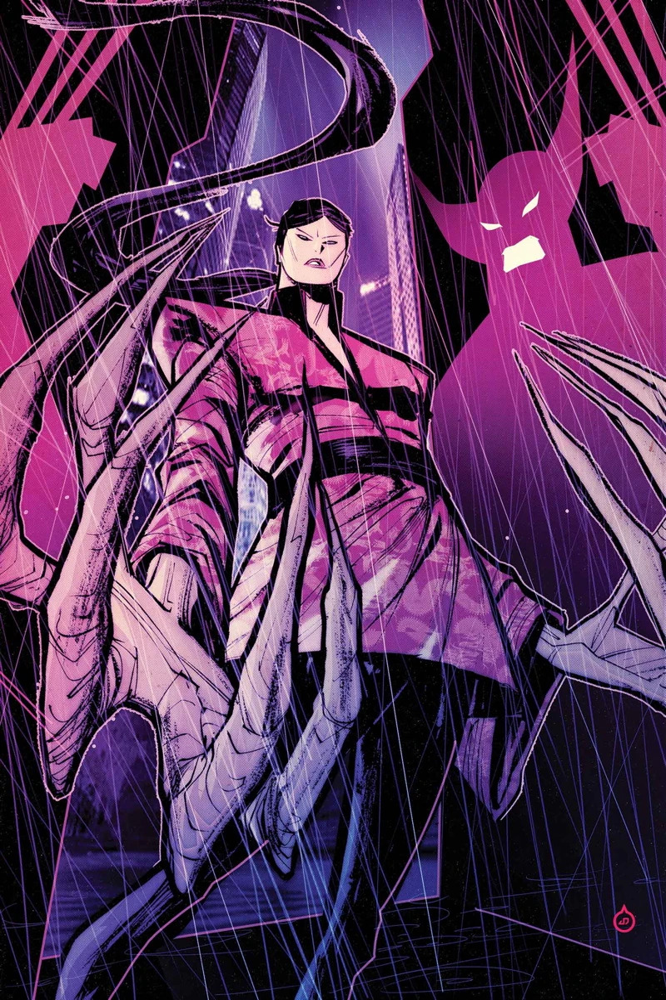
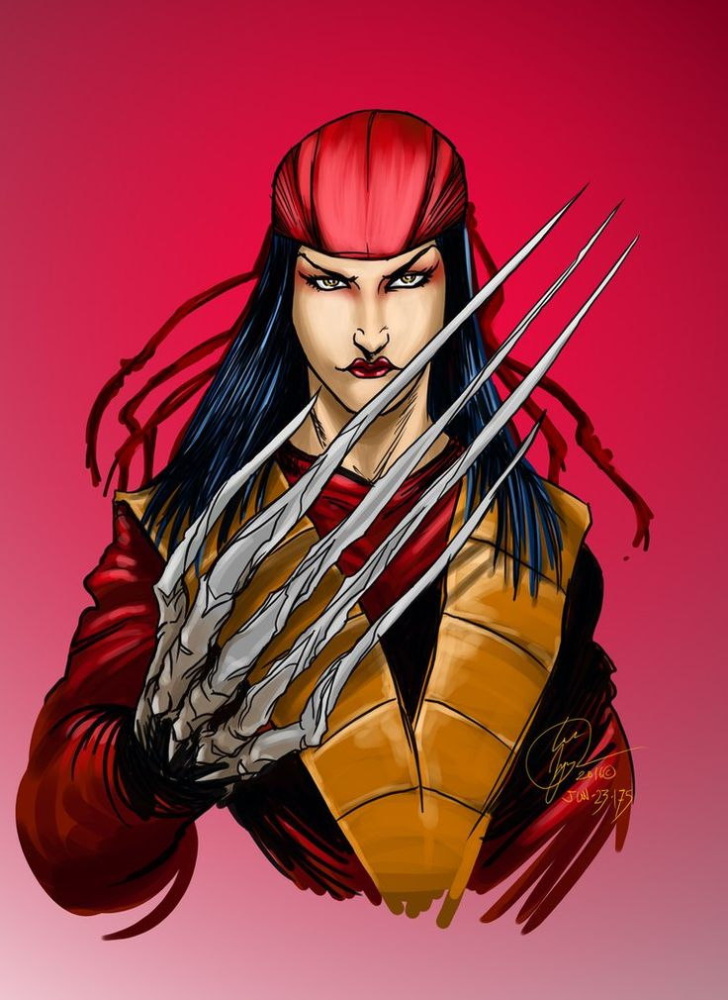

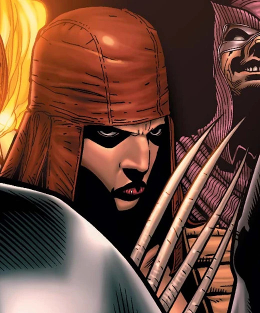
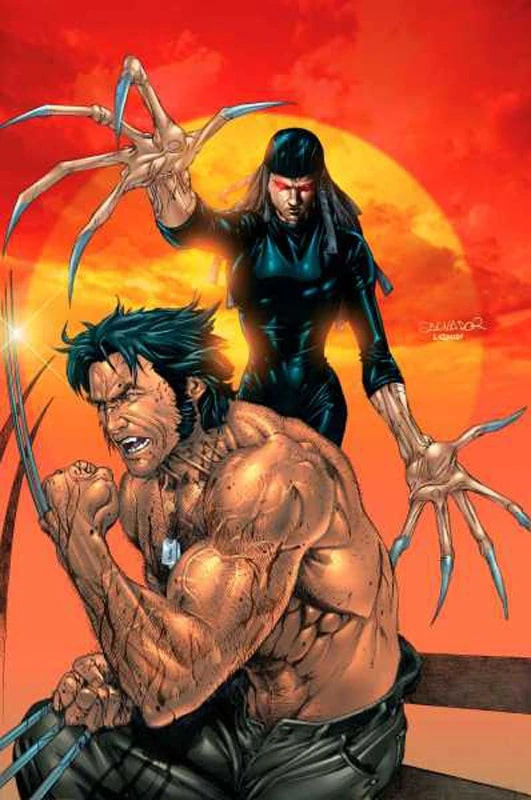
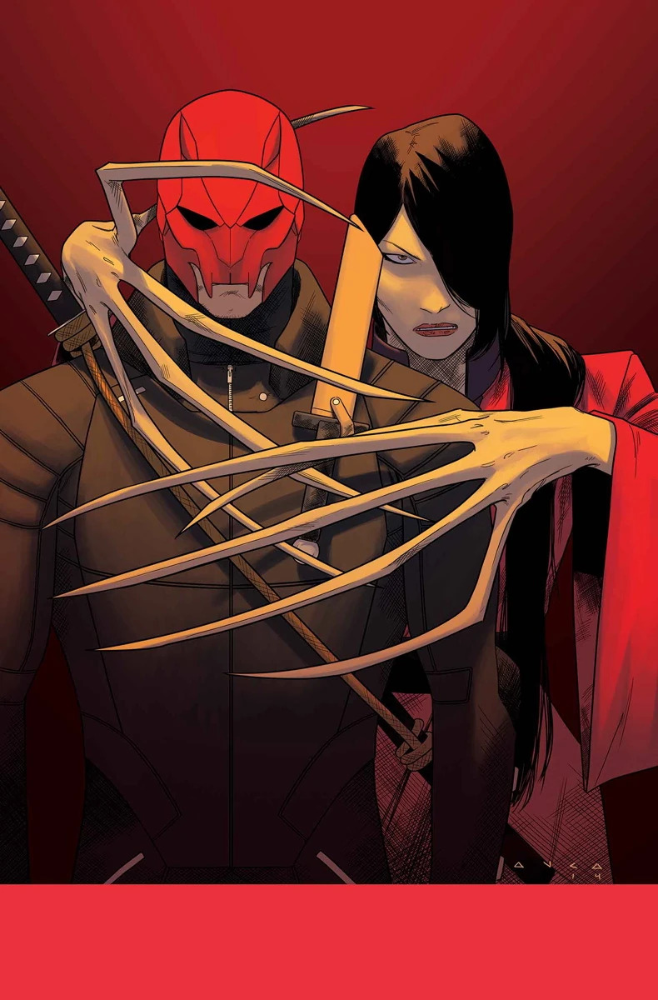
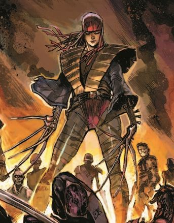
.jpg)
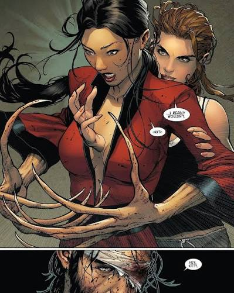
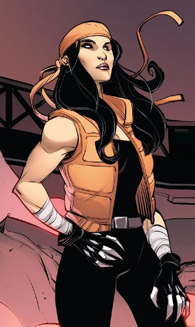
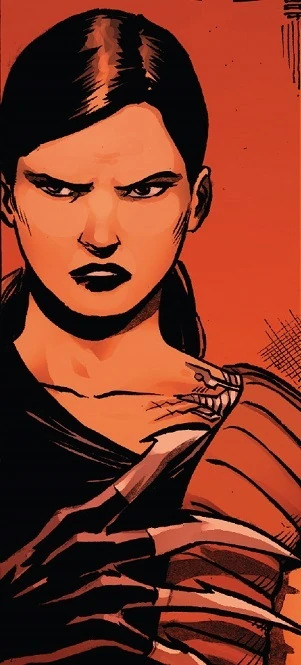
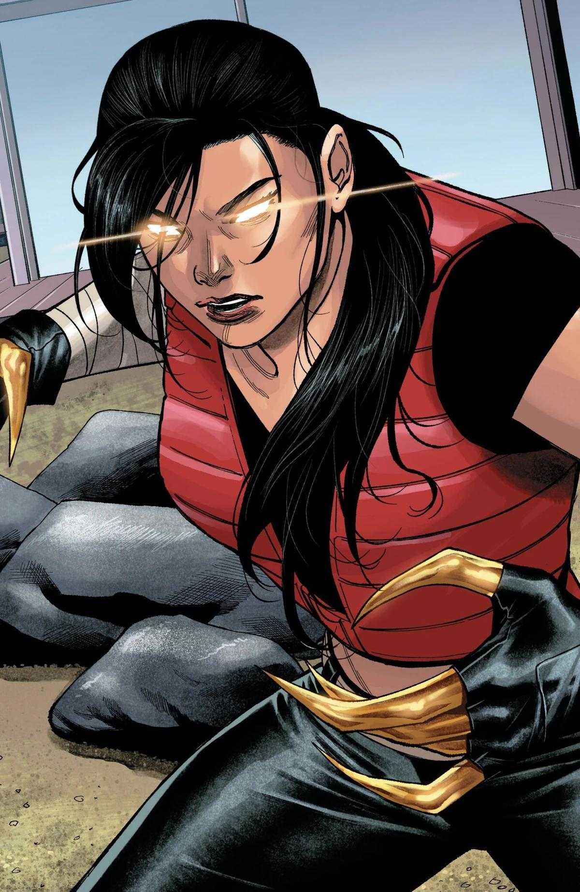
Capacités :
Lady Deathstrike a été transformée en cyborg par Spiral grâce à une technologie extraterrestre provenant de la dimension de Mojo.
Elle possède une force, une vitesse, une endurance, une résistance et une agilité surhumaines.
Son corps renforcé artificiellement par l'Adamantium est physiquement indestructible, et elle a reçut des griffes en Adamantium de 30 cm implantées à la place de ses doigts, capables de trancher n'importe quoi, et qui peuvent être allongées jusqu'à doubler de taille.

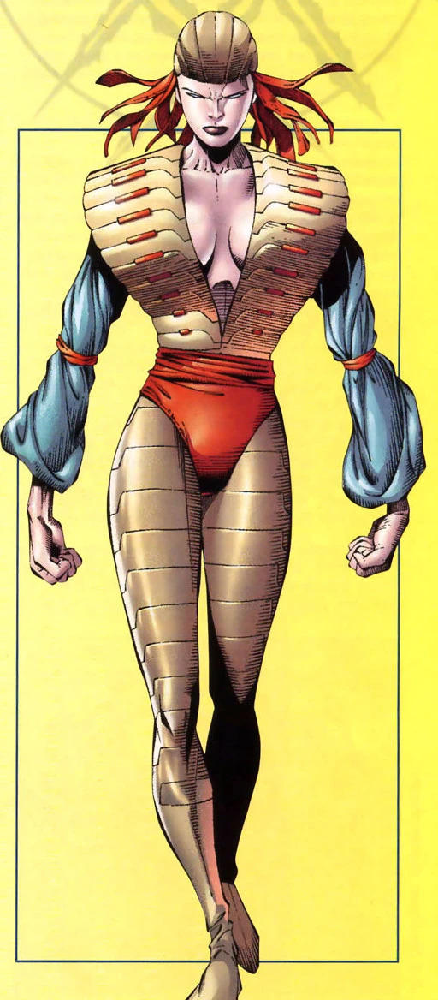
Apparence :
Lady Deathstrike est une femme grande et élancée.
Après ses améliorations cybernétiques, son corps se retrouve recouvert de composants mécaniques.
Elle a de longs cheveux noirs, raides, généralement détachés, ainsi que des yeux bleus.
Elle possède de longues griffes métalliques rétractables remplaçant ses doigts, similaires à des lames.
Son costume classique est principalement constitué d'une combinaison sombre, souvent noire ou bleu très sombre, moulante et laissant parfois apparaître des éléments métalliques de son corps.
Elle peut également porter des éléments rappelant les samouraïs et les guerriers japonais, notamment des pièces d'armure, des protections aux épaules et aux avant-bras, une sorte de jupe autour des hanches ainsi que des bottes et des protections métalliques aux jambes.
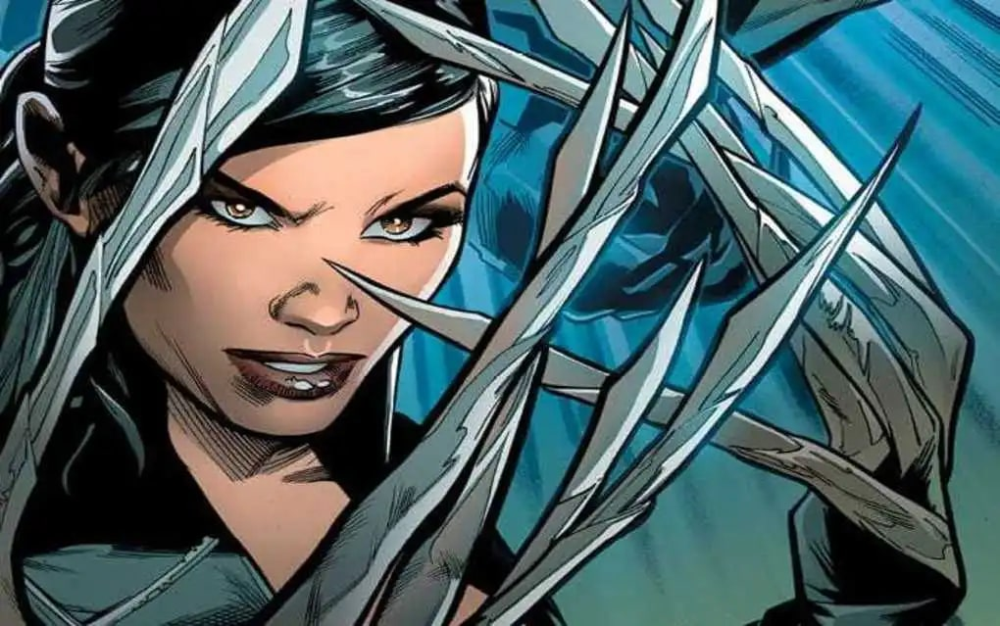
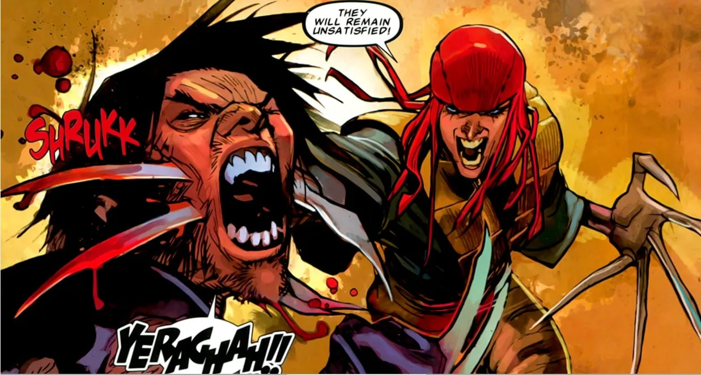
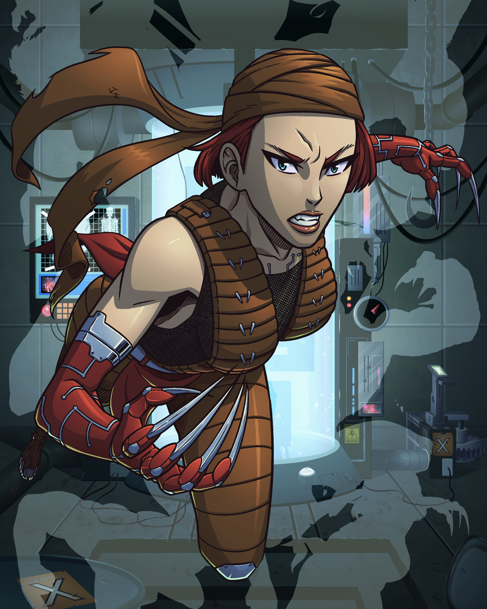
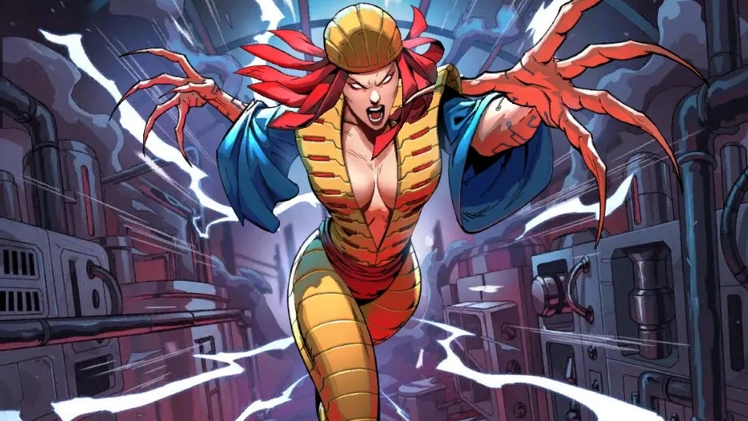
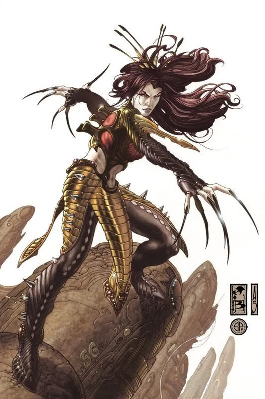
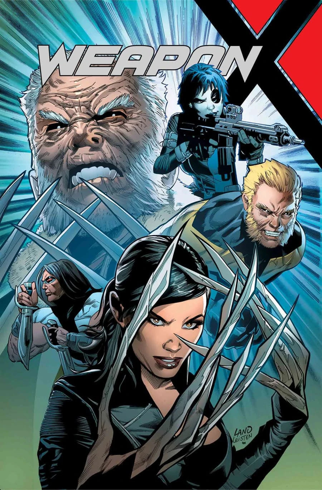
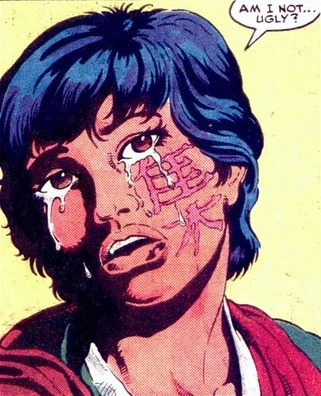
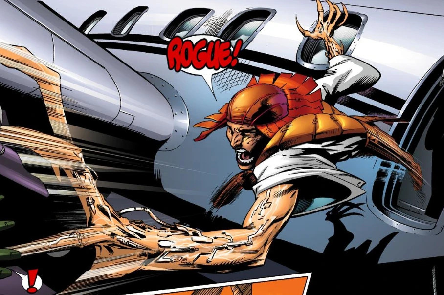
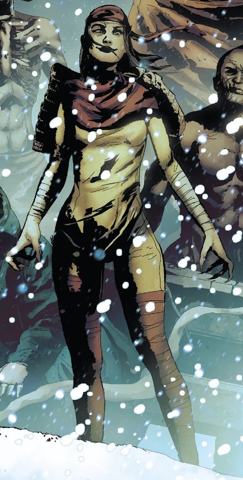